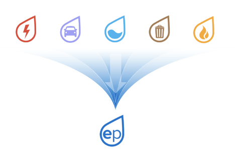

Introducing EP, Greenometry’s Co2 measurement
COMPANY REVIEW
New Co2 measurement Created by Greenometry continues its fight for political recognition.
Climate change is upon us. The problem is not people’s awareness of the current issue but the lack of action and measurable results. “The task is monumental. In order to remain below 2 degrees Celsius of global warming, emissions must be reduced by at least 20 percent by 2020 and 80 percent by 2050.” 2 Individuals know certain small-scale actions they can take to reduce their footprint, however the percentage of people who actually change their habits is too low. Now is not the time for minimal effort. To efficiently tackle climate change with current efforts, efforts would have had to start 50 years ago. We need bigger and better results. In the words of Peter Drucker “you can’t manage what you can’t measure”. Time is against us and until individuals can visualize and quantify their footprint, it will be too little progress too late. Solving the current climate crisis depends on the ability to transform our carbon intensive global economy to one that is carbon efficient.
Social responsibility has become important for companies and the trend seems to be expanding. Customers are becoming more aware of the power their purchasing decisions have and many want to consume products they know are sustainable. It’s been proven that “81 percent of S&P 500 companies now issue corporate social responsibility reports”5 and more are on their way. This shift, although helpful for many pressing issues, has not made a big enough impact in climate change as desired. Consumers have been noted to be willing to pay higher prices for sustainable brands. However, this ideology is more aspirational than they are concrete because putting theories into practice is often a more arduous process than actually theorizing.
As individuals become more aware of the current climate crisis and experience an increase in regulations, companies have started measuring and reporting their CO2 emissions, “over 60 percent of companies targeted by CDP’s Carbon Action initiative reported their carbon emissions.”2 However this has not been enough. Corporate reporting must not be mistaken for progress or corporate action, “the vast majority of companies that prepare CSR reports, report on less than 10 percent of their overall footprint.”2 Either efforts are lagging or the current measurement is not representative of actual emissions results. Another main issue is individuals’ lack of understanding of current pollution measurements. There is an absence of credible metrics that detail products carbon efficiency. Achieving the ideal carbon reduction goal depends on developing a common language that will increase and improve understanding of the climate impact every decision and action have.
Due to the current dilemma on climate change, Ory Zik and Ehud Grunfeld co-founded Greenometry. Greenometry, is a “global non-profit organization, headquartered in Boston, MA and is dedicated to catalyzing the transition to a low-carbon economy by developing and implementing a unifying, non-financial metric, rooted in data and science.”2 Ehud Grunfeld, current CTO of Greenometry and co-founder, throughout his life, built and managed R&D engineering groups of various sizes in multiple cultures. He has developed systems that are used by entities including but not limited to: telecom carriers, military, media companies, retail, and mass market global marketing. Ory Zik, co-founder and CEO, has deep entrepreneurial experience and carries a passion for protecting the environment. He is an Award-winning physicist, entrepreneur, and environmentalist, founder of Greenpeace Israel, and was the curator of Israel’s national Science Museum. He is also founder and former CEO of Heliofocus and of Energy Points. Energy Points Inc. was founded in 2010. The focus was to use quantitative metrics for energy, water and climate. Thus, Energy points were created; “a universal metric for fossil fuel consumption, merging scientific rigor with geospatial data and behavior to optimize both simplicity and accuracy.”2 In 2015, Lux Research acquired the company and Ory decided to develop Greenometry.
Greenometry is a new company with a mission to help all companies understand their environmental impact and ways to improve it. They do so with a proprietary measurement that measures individuals, products or companies’ carbon footprint. Being a new company, Greenometry faces the challenge of building their credibility and brand awareness in order to draw in customers and investors.
“Greenometry is dedicated to harnessing the most powerful force; the market to mitigate climate change through data science and quantitative thinking”1 Greenometry is a non-profit organization, headquartered in Boston, MA, that uses data and science to make carbon foot-printing more accurate, consistent, and accessible to investors, businesses, policymakers, communities and consumers. Greenometry is driving change through research, tools, and implementation. The research focuses on data collection, harmonization and behavior. Greenometry is modeled on the rhythm of a tech company, however, success is measured by reduction in CO2.

Greenometry is dedicated to apply data and science to deliver simple metrics, that allow users to meet their carbon targets faster and at a lower cost. This is done by providing a more efficient measurement. Data is collected on resource flows including electricity, water, transportation, and materials. After information is collected, algorithms are used to harmonize the data and convert it to tons of CO2 or simpler, more intuitive metrics. Greenometry suggests the use of their own measurement, created to improve accuracy and includes resources beyond fossil fuels such as land use, or more importantly water. This is why Carbon Foot-printing 2.0 was created. This way, resource consumption can be converted to climate impact by using many disciplines including: life cycle assessment, input output analysis, data science, and statistics. This measurement is called EP (energy point) and it mirrors the methodology pioneered by weight watchers to convert multiple factors into a single intuitive measurement. This measures electricity, transportation, waste, water and direct heating/cooling into a single metric (EP=M/25+E/14+W/1.4). One EP is equal to 10kgCO2-e or more easily visualized as one gallon of gasoline.2
“Greenometry aims to take a quantitative approach to help people understand climate change in terms of numbers and not adjectives.”1
By Jessica Holoschutz